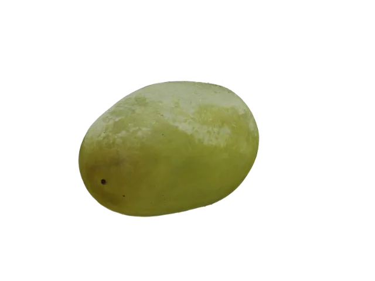
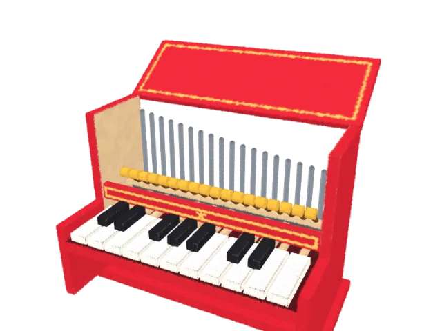
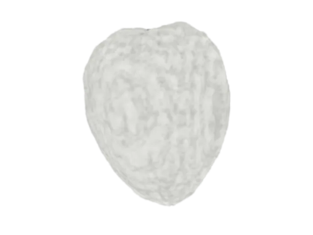

Splashery
A 3D Gaussian splat engine and studio, in a browser tab.
Everything here is drawn from soft, colored splats, sorted by depth and blended on your own device. There is nothing to install, and nothing you open leaves your device.
319 scenes and tools0 installs0 uploads

01
One splat
A splat is a soft blob with a position, a shape, a color, and an opacity. Change its shape and opacity here. Every scene on the site is this, repeated a few hundred thousand times and sorted back to front.
02
Built from recipes, not downloaded
Most objects here were never captured. A recipe of a few kilobytes says what an object is made of and which parts move, and your device builds the splats. Parts move as solid pieces on hinges, pivots, and sliders, inside one splat cloud.
The piano is played: each key goes down as it sounds.

03
A photo becomes 3D, on the device
A depth model runs in the page and lifts a single photo into a relief you can turn. It downloads only when you ask for it, and the photo is never sent anywhere. A short video becomes a scene you can fly through: the camera path is solved and the splats are trained on your device, in a browser with WebGPU.
Or drop one on the picture. It stays on this device; the depth model (about 27 MB) downloads the first time.
04
Real data
Some of the science toys use measured data. This is a real walnut, scanned with X-ray CT at CWI in Amsterdam: more than a thousand X-ray pictures, worked back into a volume. Each splat is one small block of it, 0.3 mm across.
Open it in the PlaygroundScience
Data: Der Sarkissian et al., CWI, Zenodo, CC BY 4.0, resampled to 0.3 mm.

05
A code that scans
Text, pictures, PDFs, and codes can all become splats. This QR code is made of them, and it still reads: point a phone's camera at it. The QR tools also show how a code works, how much damage it survives, and how to hide three in one picture.
06
What we haven't seen elsewhere
As far as we know. We have not tried every splat tool.
- Toys made from rulesA recipe of a few kilobytes is built into splats on your device, with a budget of 60,000 to 400,000. The shape is never a large file to download.
- Equations as a languageType x, y, and z in u, v, and t, and get an animated splat shape, with plain messages instead of crashes.
- Moving parts in one splat cloudHinges, pivots, sliders, morphs, and per-splat effects run on the graphics chip, so a chest opens without rebuilding anything.
- Hands-on physicsToss, stack, pull apart, and pour, on splats.
- Anything as splatsPhotos and videos with depth, PDFs, QR codes, real science data, the night sky, and medical volumes.
- A whole scene in a linkThe link to the grape above is 97 characters. It holds the toy and its settings, not your files, and no server stores it.